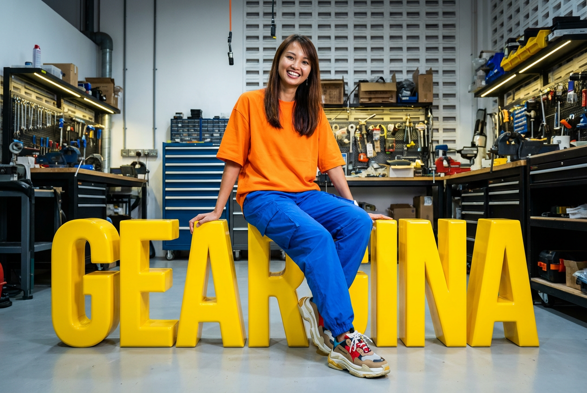

40 Professionals Walked Into an AI Workshop Not Knowing What Claude Was.
Here's What Happened Three Hours Later.
By Geargina · AI Expert & Workshop Facilitator, Singapore

Not one of them had used Claude before.
Some had heard of ChatGPT. Most had a vague sense that AI was "something they should probably be doing." A few were openly sceptical. Forty-plus business professionals, a single room, and three hours to bridge the gap between awareness and application.
By the end of the session, one participant was drafting SOPs for her team. Another had already mapped out how to cut his weekly reporting time in half.
These were not developers. Not data scientists. Not people whose job description has anything to do with technology.
They were business professionals who just needed someone to show them the door.
What a 3-Hour AI and Claude Workshop Actually Looks Like
The session was designed as an AI basics and Claude workshop — practical, hands-on, and anchored to the work people were already doing, not hypothetical use cases.
The structure was simple:
- First hour: Foundations. What AI actually is, how large language models work, why they sometimes get things wrong, and how to think about them as a tool rather than a magic box or a threat.
- Second hour: Hands-on with Claude. Real prompts, real outputs, real adjustments. Participants worked with the tool directly rather than watching a demo.
- Third hour: Applied to their own work. Each person took a current task — a report, a process, a communication challenge — and worked through it with AI assistance.
No slides designed to impress. No jargon for the sake of it. Just the tool, the work, and the space to experiment.
The Moment That Actually Matters in Every AI Workshop
Anyone who has run AI training will know the moment I am describing.
There is a pause. A brief silence while something recalibrates. Then the eyes widen slightly. Then: "Wait… it can do that for me?"
It does not happen at the same point for every person. For some it is when they see a first draft appear in seconds. For others it is when they realise they can ask follow-up questions and the tool remembers the context. For a few it is something quieter — the realisation that a task they have been dreading for weeks just became manageable.
That pause is what I run workshops for. It is the moment the fear gives way to curiosity. And once curiosity takes over, the ideas come fast.
Why AI Adoption in the Workplace Is a Confidence Problem, Not a Technology Problem
This is the thing most organisations get wrong when they think about AI adoption.
They treat it as a technical rollout. They evaluate tools, run pilot programmes, produce policy documents, and wait for adoption to follow. It often does not — or it does so slowly and unevenly.
The bottleneck is rarely the tool. It is confidence.
Professionals who feel uncertain about AI tend to avoid it, underuse it, or use it superficially — asking it to summarise emails when it could be restructuring how they work entirely. The gap between what AI can do and what most people actually do with it is enormous, and it is held in place almost entirely by psychological friction, not technical barriers.
What changes that is not a better tool or a more detailed how-to guide. It is a room where experimentation is safe, where questions are not embarrassing, and where someone with genuine depth can show — not just tell — what is possible.
Remove the fear, and the ideas flow. Consistently. Across industries, seniority levels, and job functions.
What 40+ Non-Tech Professionals Taught Me About AI Readiness
Three hours is not a long time. But it is enough to shift the frame entirely.
What I observed across the room confirmed something I have seen in every corporate AI session I have run: the people who are furthest from tech are often the quickest to apply AI meaningfully once they feel safe to try.
Business professionals come with domain expertise, clear problems, and high motivation to solve them. They are not interested in AI as a concept. They are interested in whether it can help them do their job better. When the answer is demonstrably yes — when they see it working on their actual SOP, their actual report, their actual workflow — the adoption curve collapses.
The lightbulb moment is not the end of the session. It is the beginning of the habit.
Is Your Team Still on the Sideline About AI?
If the answer is yes, it is worth asking why.
In most cases, it is not resistance. It is uncertainty. People do not know where to start, what the tool is actually capable of, or whether they will look foolish for not already knowing. They are waiting for permission — or for someone to make the first move feel safe.
That is what a well-run workshop does. It is not about teaching AI. It is about removing the barrier between your team and a tool that could genuinely change how they work.
The lightbulb moment is closer than most organisations think.
Their team just needs the right room to find it.
Geargina runs AI workshops and 1:1 coaching for businesses and professionals across Singapore and Asia. She specialises in taking non-technical teams from AI-curious to AI-capable — without the jargon, and without the overwhelm.
Interested in bringing a workshop to your team? → Get in touch.